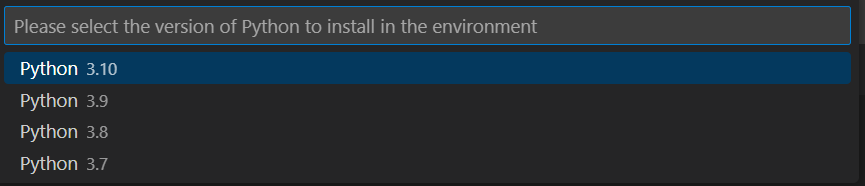
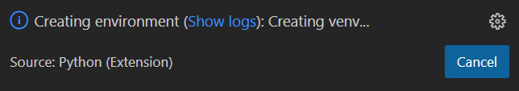
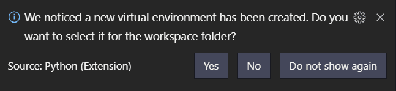
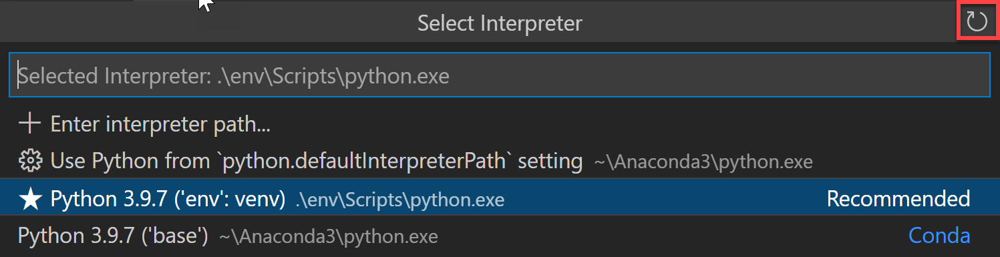
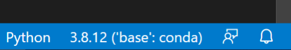
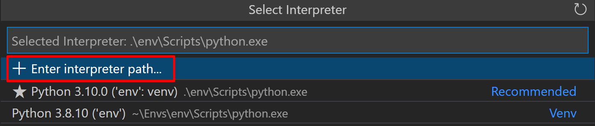
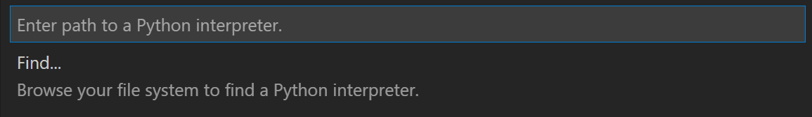

Using Python environments in VS Code
This article discusses the helpful Python environments features available in Visual Studio Code. An "environment" in Python is the context in which a Python program runs and consists of an interpreter and any number of installed packages.
Note: If you'd like to become more familiar with the Python programming language, review More Python resources.
Python environments
Global environments
By default, any Python interpreter installed runs in its own global environment. They aren't specific to a particular project. For example, if you just run python, python3, or py at a new terminal (depending on how you installed Python), you're running in that interpreter's global environment. Any packages that you install or uninstall affect the global environment and all programs that you run within it.
Working in the global environment is an easy way to get started. If you install packages in that environment, though, in time it will become crowded and make it difficult to properly test an application.
Virtual environments
To prevent such clutter, developers often create a virtual environment for a project. A virtual environment is a folder that contains a copy (or symlink) of a specific interpreter. When you install into a virtual environment, any packages you install are installed only in that subfolder. When you then run a Python program within that environment, you know that it's running against only those specific packages.
Note: While it's possible to open a virtual environment folder as a workspace, doing so is not recommended and might cause issues with using the Python extension.
Python environment tools
Once you activate your virtual environment, you’ll need to identify how to manage it and its accompanying packages. The following table explains how to use these Python environments:
| Tool | Definition and Purpose |
|---|---|
| pip | The Python package manager that installs and updates packages. It's installed with Python 3.9+ by default (install python3-pip on Debian-based OSs). |
| venv | Allows you to manage separate package installations for different projects and is installed with Python 3 by default (install python3-venv if you are using a Debian-based OS) |
| conda | Installed with Anaconda and Miniconda. It can be used to manage both packages and virtual environments. Generally used for data science projects. |
Conda environments
A conda environment is a Python environment that's managed using the conda package manager (see Getting started with conda (conda.io)). Whether to use a conda environment or a virtual one will depend on your packaging needs, what your team has standardized on, etc.
Where the extension looks for environments
The extension automatically looks for interpreters in the following locations:
- Standard install paths such as
/usr/local/bin,/usr/sbin,/sbin,c:\\python27,c:\\python36, etc. - Virtual environments located directly under the workspace (project) folder.
- Virtual environments located in the folder identified by the
python.venvPathsetting (see General Python settings), which can contain multiple virtual environments. The extension looks for virtual environments in the first-level subfolders ofvenvPath. - Virtual environments located in a
~/.virtualenvsfolder for virtualenvwrapper. - Interpreters installed by pyenv, Pipenv, and Poetry.
- Virtual environments located in the path identified by
WORKON_HOME(as used by virtualenvwrapper). - Conda environments found by
conda env list. Conda environments which do not have an interpreter will have one installed for them upon selection. - Interpreters installed in a
.direnvfolder for direnv under the workspace (project) folder.
You can also manually specify an interpreter if Visual Studio Code doesn't locate your interpreter automatically.
Note: Once the "select interpreter" flow is triggered, pipenv environments for the workspace folder will be searched for. If one is found, then no other interpreters are searched for or listed as pipenv expects to manage all aspects.
The extension also loads an environment variable definitions file identified by the python.envFile setting. The default value of this setting is ${workspaceFolder}/.env.
Creating environments
Using the Create Environment command
From within VS Code, you can create non-global environments, using virtual environments or Anaconda, by opening the Command Palette (⇧⌘P (Windows, Linux Ctrl+Shift+P)), start typing the Python: Create Environment command to search, and then select the command.
The command presents a list of environment types: Venv or Conda.

If you are creating an environment using Venv, the command presents a list of interpreters that can be used as a base for the new virtual environment.

If you are creating an environment using Conda, the command presents a list of Python versions that can be used for your project.

After selecting the desired interpreter or Python version, a notification will show the progress of the environment creation and the environment folder will appear in your workspace.

Note: The command will also install necessary packages outlined in a requirements/dependencies file, such as
requirements.txt,pyproject.toml, orenvironment.yml, located in the project folder.
Create a virtual environment in the terminal
To create a virtual environment, use the following command, where ".venv" is the name of the environment folder:
# macOS/Linux
# You may need to run sudo apt-get install python3-venv first
python3 -m venv .venv
# Windows
# You can also use py -3 -m venv .venv
python -m venv .venv
Note: To learn more about the
venvmodule, see Creation of virtual environments on Python.org.
When you create a new virtual environment, a prompt will be displayed to allow you to select it for the workspace.

This will add the path to the Python interpreter from the new virtual environment to your workspace settings. That environment will then be used when installing packages and running code through the Python extension. For examples of using virtual environment in projects, see the Python, Django, and Flask tutorials.
Tip: When you're ready to deploy the application to other computers, you can create a
requirements.txtfile with the commandpip freeze > requirements.txt(pip3on macOS/Linux). The requirements file describes the packages you've installed in your virtual environment. With only this file, you or other developers can restore those packages usingpip install -r requirements.txt(or, again,pip3on macOS/Linux). By using a requirements file, you need not commit the virtual environment itself to source control.
Create a conda environment in the terminal
The Python extension automatically detects existing conda environments. We recommend you install a Python interpreter into your conda environment, otherwise one will be installed for you after you select the environment. For example, the following command creates a conda environment with the Python 3.9 interpreter and several libraries, which VS Code then shows in the list of available interpreters:
conda create -n env-01 python=3.9 scipy=0.15.0 astroid babel
In contrast, if you fail to specify an interpreter, as with conda create --name env-00, the environment won't appear in the list.
For more information on the conda command line, see Conda environments (conda.io).
Additional notes:
- If you create a new conda environment while VS Code is running, use the refresh icon on the top right of the Python: Select Interpreter window; otherwise you may not see the environment there.

-
To ensure the environment is set up well from a shell perspective, one option is to use an Anaconda prompt with the activated environment to launch VS Code using the
code .command. At that point you just need to select the interpreter using the Command Palette or by clicking on the status bar. -
Although the Python extension for VS Code doesn't currently have direct integration with conda environment.yml files, VS Code itself is a great YAML editor.
-
Conda environments can't be automatically activated in the VS Code Integrated Terminal if the default shell is set to PowerShell. To change the shell, see Integrated terminal - Terminal profiles.
-
You can manually specify the path to the conda executable to use for activation (version 4.4+). To do so, open the Command Palette (⇧⌘P (Windows, Linux Ctrl+Shift+P)) and enter Preferences: Open User Settings. Then set
python.condaPath, which is in the Python extension section of User Settings, with the appropriate path.
Work with Python interpreters
Select and activate an environment
By default, the Python extension looks for and uses the first Python interpreter it finds in the system path. To select a specific environment, use the Python: Select Interpreter command from the Command Palette (⇧⌘P (Windows, Linux Ctrl+Shift+P)).

Note: If the Python extension doesn't find an interpreter, it issues a warning. On macOS, the extension also issues a warning if you're using the OS-installed Python interpreter, because you typically want to use an interpreter you install directly. In either case, you can disable these warnings by setting
python.disableInstallationChecktotruein your user settings.
You can switch environments at any time; switching environments helps you test different parts of your project with different interpreters or library versions as needed.
The Python: Select Interpreter command displays a list of available global environments, conda environments, and virtual environments. (See the Where the extension looks for environments section for details, including the distinctions between these types of environments.) The following image, for example, shows several Anaconda and CPython installations along with a conda environment and a virtual environment (env) that's located within the workspace folder:
Note: On Windows, it can take a little time for VS Code to detect available conda environments. During that process, you may see "(cached)" before the path to an environment. The label indicates that VS Code is presently working with cached information for that environment.
If you have a folder or a workspace open in VS Code and you select an interpreter from the list, the Python extension will store that information internally so that the same interpreter will be used once you reopen the workspace.
The Python extension uses the selected environment for running Python code (using the Python: Run Python File in Terminal command), providing language services (auto-complete, syntax checking, linting, formatting, etc.) when you have a .py file open in the editor, and opening a terminal with the Terminal: Create New Terminal command. In the latter case, VS Code automatically activated the selected environment.
Tip: To prevent automatic activation of a selected environment, add
"python.terminal.activateEnvironment": falseto yoursettings.jsonfile (it can be placed anywhere as a sibling to the existing settings).
Tip: If the activate command generates the message "Activate.ps1 is not digitally signed. You cannot run this script on the current system.", then you need to temporarily change the PowerShell execution policy to allow scripts to run (see About Execution Policies in the PowerShell documentation):
Set-ExecutionPolicy -ExecutionPolicy RemoteSigned -Scope Process
Note: By default, VS Code uses the interpreter selected for your workspace when debugging code. You can override this behavior by specifying a different path in the
pythonproperty of a debug configuration. See Choose a debugging environment.
The selected interpreter version will show on the right side of the Status Bar.

The Status Bar also reflects when no interpreter is selected.

In either case, clicking this area of the Status Bar is a convenient shortcut for the Python: Select Interpreter command.
Tip: If you have any problems with VS Code recognizing a virtual environment, please file an issue in the extension repository so we can help determine the cause.
Manually specify an interpreter
If VS Code doesn't automatically locate an interpreter you want to use, you can browse for the interpreter on your file system or provide the path to it manually.
You can do so by running the Python: Select Interpreter command and clicking on the Enter interpreter path... option that shows on the top of the interpreters list:

You can then either enter the full path of the Python interpreter directly in the text box (for example, ".venv/Scripts/python.exe"), or you can select the Find... button and browse your file system to find the python executable you wish to select.

If you want to manually specify a default interpreter that will be used once you first open your workspace, you can create or modify an entry for python.defaultInterpreterPath setting in your workspace settings.json with the full path to the Python executable.
For example:
-
Windows:
{ "python.defaultInterpreterPath": "c:/python39/python.exe" } -
macOS/Linux:
{ "python.defaultInterpreterPath": "/home/python39/python" }
You can also use python.defaultInterpreterPath to point to a virtual environment, for example:
-
Windows:
{ "python.defaultInterpreterPath": "c:/dev/ala/venv/Scripts/python.exe" } -
macOS/Linux:
{ "python.defaultInterpreterPath": "/home/abc/dev/ala/venv/bin/python" }
Note: Changes to the
python.defaultInterpreterPathsetting are not picked up after an interpreter has already been selected for a workspace; any changes to the setting will be ignored once an initial interpreter is selected for the workspace.
Additionally, if you'd like to set up a default interpreter to all of your Python applications, you can add an entry for python.defaultInterpreterPath manually inside your User Settings. To do so, open the Command Palette (⇧⌘P (Windows, Linux Ctrl+Shift+P)) and enter Preferences: Open User Settings. Then set python.defaultInterpreterPath, which is in the Python extension section of User Settings, with the appropriate interpreter.
You can also use an environment variable in the path setting using the syntax ${env:VARIABLE}. For example, if you've created a variable named PYTHON_INSTALL_LOC with a path to an interpreter, you can then use the following setting value:
"python.defaultInterpreterPath": "${env:PYTHON_INSTALL_LOC}",
Note: Variable substitution is only supported in VS Code settings files, it will not work in
.envenvironment files.
By using an environment variable, you can easily transfer a project between operating systems where the paths are different, just be sure to set the environment variable on the operating system first.
Environments and Terminal windows
After using Python: Select Interpreter, that interpreter is applied when right-clicking a file and selecting Python: Run Python File in Terminal. The environment is also activated automatically when you use the Terminal: Create New Terminal command unless you change the python.terminal.activateEnvironment setting to false.
However, launching VS Code from a shell in which a certain Python environment is activated doesn't automatically activate that environment in the default Integrated Terminal. Use the Terminal: Create New Terminal command after VS Code is running.
Note: conda environments cannot be automatically activated in the integrated terminal if PowerShell is set as the integrated shell. See Integrated terminal - Terminal profiles for how to change the shell.
Any changes you make to an activated environment within the terminal are persistent. For example, using conda install <package> from the terminal with a conda environment activated installs the package into that environment permanently. Similarly, using pip install in a terminal with a virtual environment activated adds the package to that environment.
Changing interpreters with the Python: Select Interpreter command doesn't affect terminal panels that are already open. You can thus activate separate environments in a split terminal: select the first interpreter, create a terminal for it, select a different interpreter, then use the split button (⌘\ (Windows, Linux Ctrl+Shift+5)) in the terminal title bar.
Choose a debugging environment
By default, the debugger will use the Python interpreter you've selected with the Python extension. However, if you have a python property in the debug configuration of launch.json, that interpreter is used instead. To be more specific, VS Code will give precedence to the python property of the selected debug configuration in launch.json. If it's not defined, then it will use the path to the Python interpreter you've selected for your workspace.
For more details on debug configuration, see Debugging configurations.
Limited support for Python 2.7
The Python extension no longer offers IntelliSense support for Python 2.7 with Jedi as it only supports Python 3 at this point. When using Python 2.7 with the Python extension you can customize the language server setting to either turn off auto-completions or select Pylance as your language server, as it may provide a good experience if the code is compatible enough with Python 3.
We currently support selecting Python 2.7 as an interpreter in your workspace. Because Python 2.7 is no longer maintained as of January 2020, we strongly suggest you to upgrade your code to Python 3 as soon as you can. You can learn how to port your code to Python 3 if you need help.
Environment variables
Environment variable definitions file
An environment variable definitions file is a simple text file containing key-value pairs in the form of environment_variable=value, with # used for comments. Multiline values aren't supported, but values can refer to any other environment variable that's already defined in the system or earlier in the file. For more information, see Variable substitution. Environment variable definitions files can be used for scenarios such as debugging and tool execution (including linters, formatters, IntelliSense, and testing tools), but aren't applied to the terminal.
By default, the Python extension looks for and loads a file named .env in the current workspace folder, then applies those definitions. The file is identified by the default entry "python.envFile": "${workspaceFolder}/.env" in your user settings (see General Python settings). You can change the python.envFile setting at any time to use a different definitions file.
Note: Environment definition files are not used in all situations where environment variables are available for use. Unless Visual Studio Code documentation states otherwise, these only affect certain scenarios as per their definition. For example: The extension doesn't use environment definition files when resolving setting values.
A debug configuration also contains an envFile property that also defaults to the .env file in the current workspace (see Debugging - Set configuration options). This property allows you to easily set variables for debugging purposes that replace variables specified in the default .env file.
For example, when developing a web application, you might want to easily switch between development and production servers. Instead of coding the different URLs and other settings into your application directly, you could use separate definitions files for each. For example:
dev.env file
# dev.env - development configuration
# API endpoint
MYPROJECT_APIENDPOINT=https://my.domain.com/api/dev/
# Variables for the database
MYPROJECT_DBURL=https://my.domain.com/db/dev
MYPROJECT_DBUSER=devadmin
MYPROJECT_DBPASSWORD=!dfka**213=
prod.env file
# prod.env - production configuration
# API endpoint
MYPROJECT_APIENDPOINT=https://my.domain.com/api/
# Variables for the database
MYPROJECT_DBURL=https://my.domain.com/db/
MYPROJECT_DBUSER=coreuser
MYPROJECT_DBPASSWORD=kKKfa98*11@
You can then set the python.envFile setting to ${workspaceFolder}/prod.env, then set the envFile property in the debug configuration to ${workspaceFolder}/dev.env.
Note: When environment variables are specified using multiple methods, be aware that there is an order of precedence. All
envvariables defined in thelaunch.jsonfile will override variables contained in the.envfile, specified by thepython.envFilesetting (user or workspace). Similarly,envvariables defined in thelaunch.jsonfile will override the environment variables defined in theenvFilethat are specified inlaunch.json.
Variable substitution
When defining an environment variable in a definitions file, you can use the value of any existing environment variable with the following general syntax:
<VARIABLE>=...${env:EXISTING_VARIABLE}...
where ... means any other text as used in the value. The curly braces are required.
Within this syntax, the following rules apply:
- Variables are processed in the order they appear in the
.envfile, so you can use any variable that's defined earlier in the file. - Single or double quotes don't affect substituted value and are included in the defined value. For example, if the value of
VAR1isabcedfg, thenVAR2='${env:VAR1}'assigns the value'abcedfg'toVAR2. - The
$character can be escaped with a backslash, as in\$. - You can use recursive substitution, such as
PYTHONPATH=${env:PROJ_DIR}:${env:PYTHONPATH}(wherePROJ_DIRis any other environment variable). - You can use only simple substitution; nesting such as
${_${env:VAR1}_EX}isn't supported. - Entries with unsupported syntax are left as-is.
Use of the PYTHONPATH variable
The PYTHONPATH environment variable specifies additional locations where the Python interpreter should look for modules. In VS Code, PYTHONPATH can be set through the terminal settings (terminal.integrated.env.*) and/or within an .env file.
When the terminal settings are used, PYTHONPATH affects any tools that are run within the terminal by a user, as well as any action the extension performs for a user that is routed through the terminal such as debugging. However, in this case when the extension is performing an action that isn't routed through the terminal, such as the use of a linter or formatter, then this setting won't have an effect on module look-up.
When PYTHONPATH is set using an .env file, it will affect anything the extension does on your behalf and actions performed by the debugger, but it will not affect tools run in the terminal.
If needed, you can set PYTHONPATH using both methods.
An example of when to use PYTHONPATH would be if you have source code in a src folder and tests in a tests folder. When running tests, however, those tests can't normally access modules in src unless you hard-code relative paths.
To solve this problem, you could add the path to src to PYTHONPATH by creating an .env file within your VS Code workspace.
PYTHONPATH=src
Then set python.envFile in your settings.json file to point to the .env file you just created. For example, if the .env file was in your workspace root, your settings.json would be set as shown:
"python.envFile": "${workspaceFolder}/.env"
The value of PYTHONPATH can contain multiple locations separated by os.pathsep: a semicolon (;) on Windows and a colon (:) on Linux/macOS. Invalid paths are ignored. If you find that your value for PYTHONPATH isn't working as expected, make sure that you're using the correct separator between locations for the operating system. For example, using a colon to separate locations on Windows, or using a semicolon to separate locations on Linux/macOS results in an invalid value for PYTHONPATH, which is ignored.
Note: PYTHONPATH does not specify a path to a Python interpreter itself. For additional information about PYTHONPATH, read the PYTHONPATH documentation.
Next steps
- Editing code - Learn about autocomplete, IntelliSense, formatting, and refactoring for Python.
- Debugging - Learn to debug Python both locally and remotely.
- Testing - Configure test environments and discover, run, and debug tests.
- Settings reference - Explore the full range of Python-related settings in VS Code.
More Python resources
- Getting Started with Python in VS Code - Learn how to edit, run, and debug code in VS Code.
- Virtual Environments and Packages (Python.org) - Learn more about virtual environments and packages.
- Installing Python Modules (Python.org) - Learn how to install Python modules.
- Python tutorial (Python.org) - Learn more about the Python language.